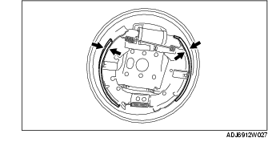
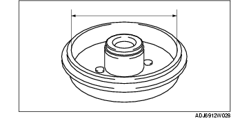

Rear brake (drum) inspection
Brake Lining Thickness Inspection
1. Remove the hub spindle and drum component as a single unit.(See REAR BRAKE (DRUM) REMOVAL/INSTALLATION.)
2. Measure the thickness of the brake lining.

Minimum rear brake lining thickness
Brake Drum Inspection
1. Remove the drum component.(See REAR BRAKE (DRUM) REMOVAL/INSTALLATION.)
2. Measure the inner diameter of the brake drum.

Maximum rear brake drum inner diameter
3. Apply chalk to the inside of the drum, and rub against the drum shoe. Inspect for scratches, and uneven or abnormal wear inside the drum.

- • If there is marked partial wear of the brake drum, repair it within the maximum brake drum inner diameter or replace it.
4. After inspection, wipe the chalk off.